4つの顔を持つ
ひとつの製品。
Living Brain の画面を、実測とスクリーンショットで調べました。 マーケティング、料金、ドキュメント、アプリ。それぞれは良くできていますが、 横に並べると別々のサービスに見えます。良さと欠陥を、証拠つきで整理します。
4つの視覚言語
同じ製品なのに、面ごとに背景・アクセント・見出しの太さが違います。
すべて ChatSans ですが、見出しの weight が 500 と 700 で分かれます。主ボタンの色も黒・紫・白の3種あり、どれが主要操作か一定しません。
マーケティングサイト
WebGLのヒーロー、数字カード、抽象概念の図解。見せ方は非常に強い。
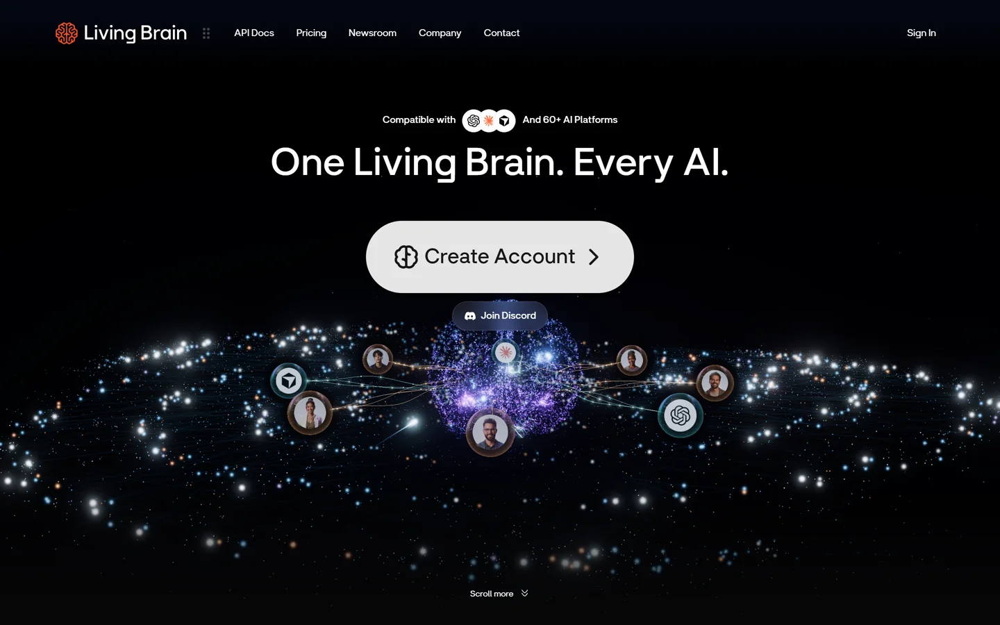
button として実装されています。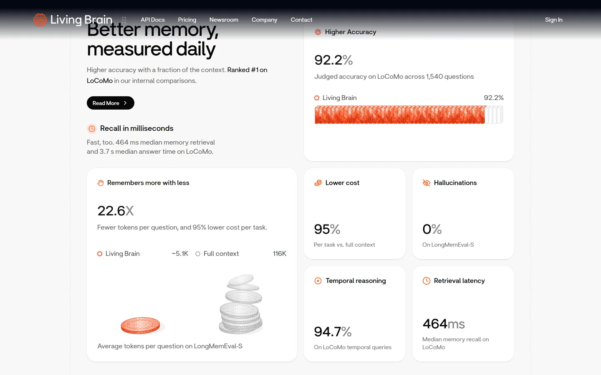
良い点
数字が主役で、視線が自然に落ちる。抽象概念（情報の整理）を「散らばったファイルが集まる」図に置き換えている。スクロールのリズムが一定。
気になる点
価値の説明が約2,300px下まで出てこない。ヒーローは「きれいな宇宙」が先に立つ。CTAは明確なので致命傷ではない。
ヘッダーが読めない時間がある
実測した唯一の「明確な欠陥」です。
ヘッダーは position: sticky、高さ96px、背景は完全な透明、リンク色は白。スクロール位置 0 / 2250 / 3400 / 5000 / 5800 のすべてで同じでした。明るいセクションの上では、白文字が白背景に乗ります。
Bring your Living Brain everywhere
この帯に白いナビ文字が重なるため、判読できません。
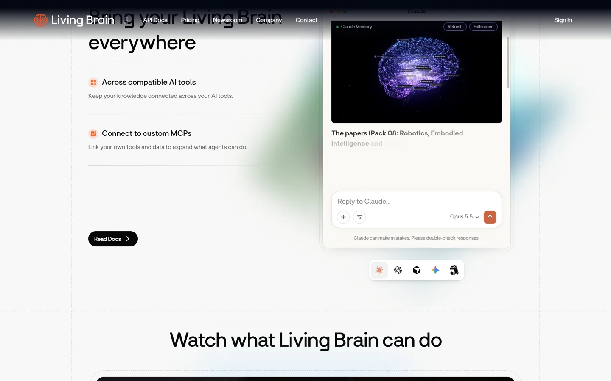
上部の暗いスクリムはセクション側の装飾で、ヘッダー自身は背景を持っていません。そのためセクションの切り替わりで可読性が落ちます。ヘッダーに backdrop-filter と半透明背景を持たせるのが定石です。
料金ページ
3列のカードは整っていますが、比較の軸が揃っていません。
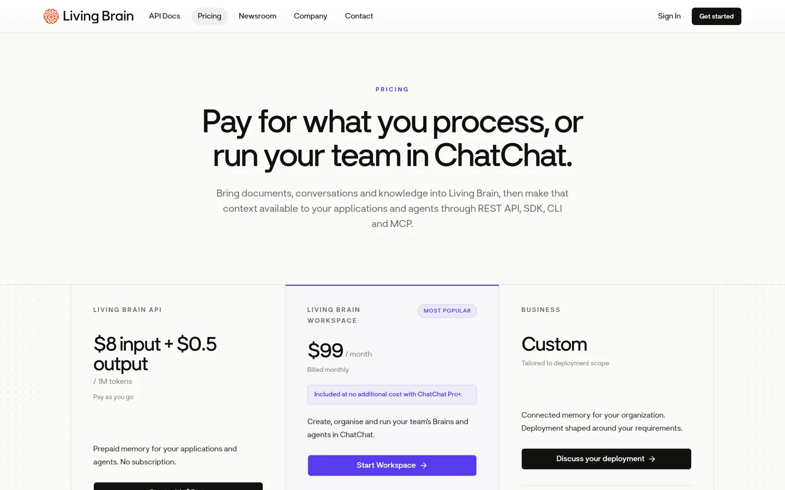
構造
価格 → 説明 → ボタンの順序は3列で揃っている。中央だけ紫の枠と淡い背景で「MOST POPULAR」。
単位
$8 / 1M tokens、$99 / month、Custom。並列なのに計算できない。
強調
紫（Start Workspace）と黒（Discuss your deployment）が混在し、優先順位が色で読めない。
ドキュメント
開発者向けの要素は揃っています。1点だけAA違反。
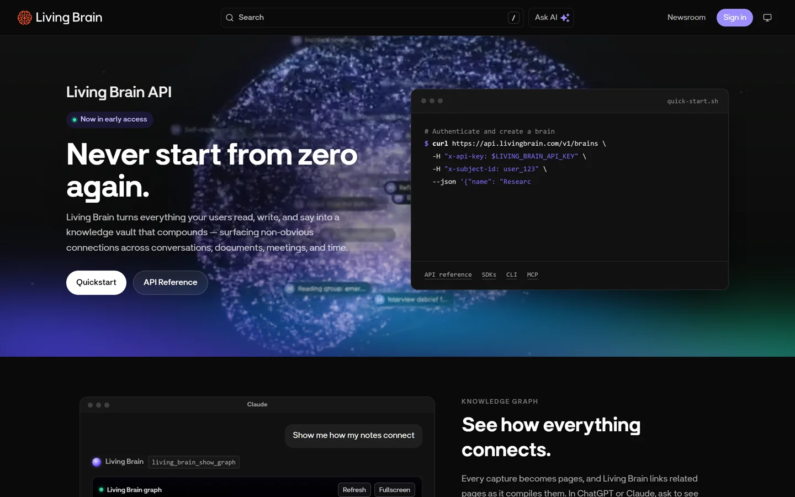
/ ショートカット、Ask AI、コード例。Fern 生成。実測: Sign in ボタンのコントラストは 2.7:1（14px）。WCAG AA の 4.5:1 を下回ります。
アプリ（ログイン後）
サイドバー型で情報密度が高い。定番の構造で迷いにくいが、入口が重複しています。
1 of 1 brains - Upgrade
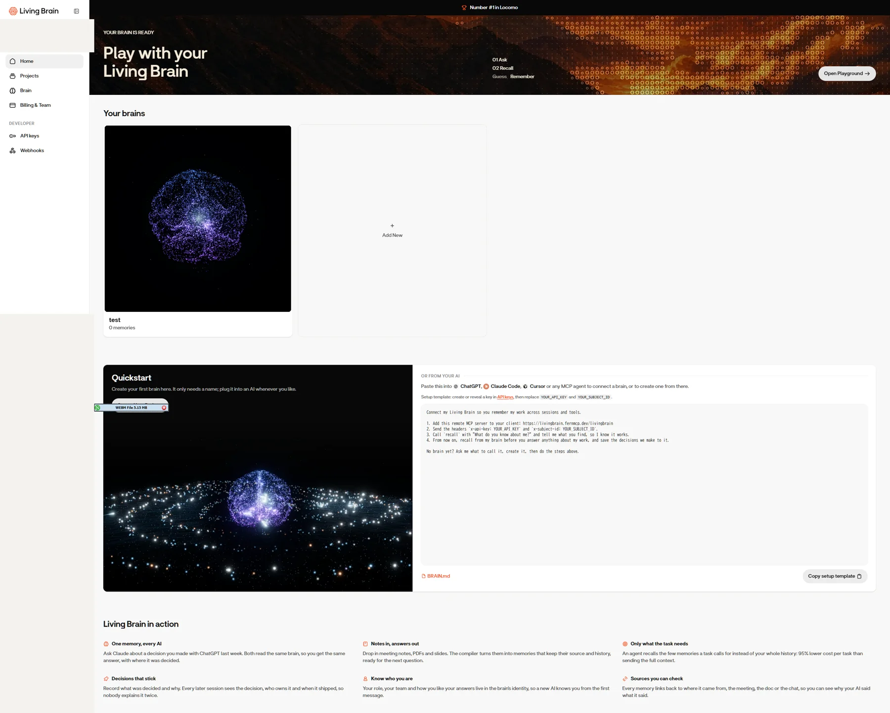
Home と Brain が重複
両方にブレインカードの一覧があります。Home は「ヒーロー＋一覧＋Quickstart」、Brain は「統計＋一覧」。初見では、どちらが本来の入口か分かりません。
単位の混在
利用量が 1 / 1、0 / 3 と数字なのに、Brains だけ 1 / no fixed cap。同じ表の中で表現が変わります。
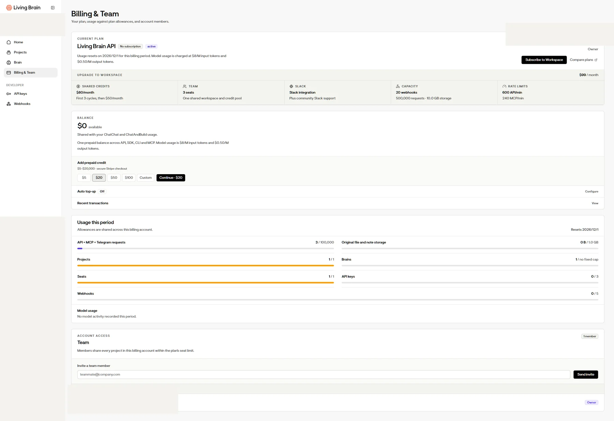
オンボーディングは、この製品で一番良い
手紙 → 数字 → 仕組み → 限界 → 試す。記憶製品に必要な信頼の作り方です。
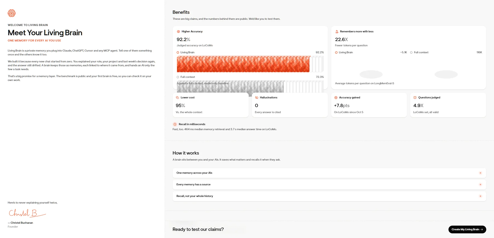
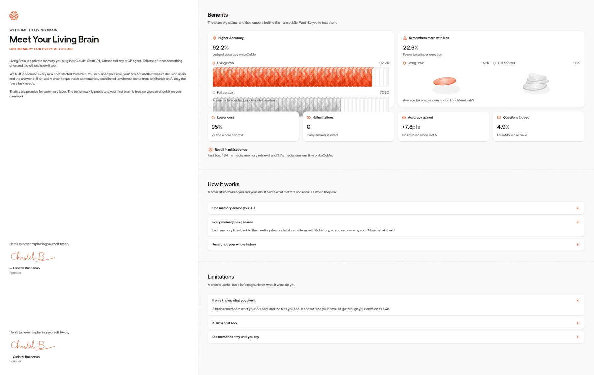
記憶製品の導入障壁は「何を覚えているか分からない」という不安です。Limitations を先に開示すると、期待値が揃い、クレームではなく仕様として受け取られます。
モバイル
レイアウトは崩れませんが、文言が途中で切れます。
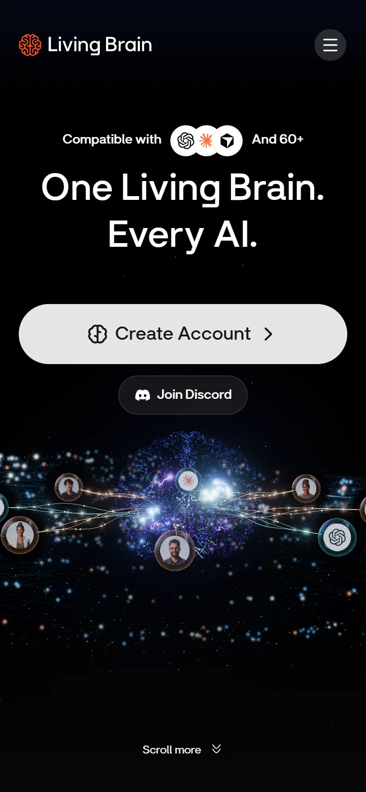
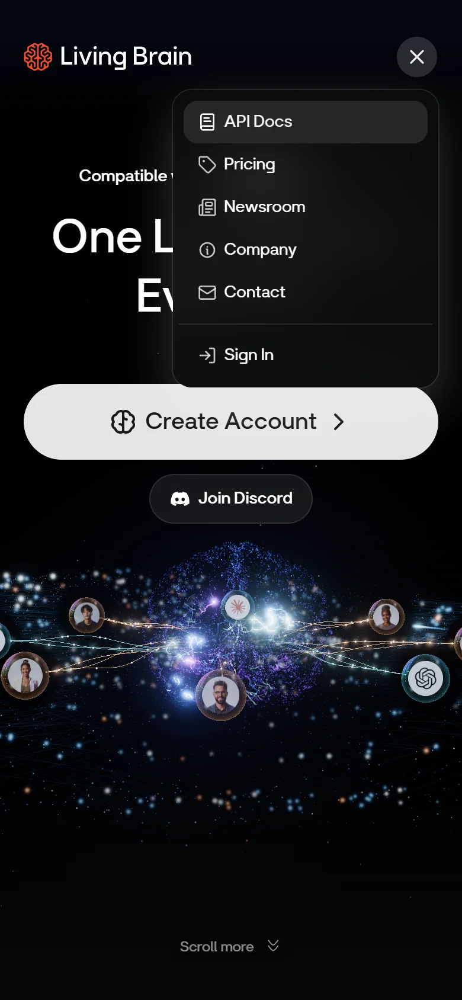
実測: 「Compatible with [ロゴ] And 60+ AI Platforms」の AI Platforms は display: none。画面には 「And 60+」だけが残り、文が途中で終わって見えます。
アクセシビリティ監査（実測）
各ページでDOMと計算スタイルを読み、コントラストとタップ領域を計算しました。
| ページ | h1 | 見出し飛び | alt欠落 | コントラスト | 24px未満 |
|---|---|---|---|---|---|
| ホーム | 2 | 1 | 0/10 | 1/300 | 16/121 |
| 料金 | 1 | 1 | — | 0/157 | 7/23 |
| ドキュメント | 1 | 0 | 0/1 | 1/73 | 16/62 |
| アプリ入口 | 1 | 0 | — | 0/2 | 0/3 |
ホームは main が2つ、名前のない navigation が2つ。見出し27個のうち8個が名前を持ちません。
問題と改善
重大度順。上から直すと効果が大きい順です。
| 問題 | 重大度 | 直し方 |
|---|---|---|
| ヘッダーが透明＋白文字で読めない | 高 | ヘッダー自身に半透明背景と backdrop-filter |
| サインインが2系統ある | 高 | 片方に統一し、もう片方はリダイレクト |
| 主ボタンの色が3種 | 高 | 紫＝主要、黒＝確定、白＝マーケ と役割を固定 |
| モバイルで文が切れる | 中 | AI Platforms を消さず、短い表現に差し替える |
| Home と Brain の重複 | 中 | Home＝次の行動、Brain＝一覧と管理に分ける |
| h1・main・nav の重複 | 中 | sr-only の h1 を削除、nav に aria-label |
| 「get thing done」 | 中 | 「get things done」に校正 |
| 料金の単位混在 | 低 | 「1ユーザーあたり月額」に換算して併記 |
証拠画像は25点（WebP）。ログイン後の画面はユーザー提供で、個人情報はマスク済みです。
数値は evidence/ui-audit-*.json に生データがあります。